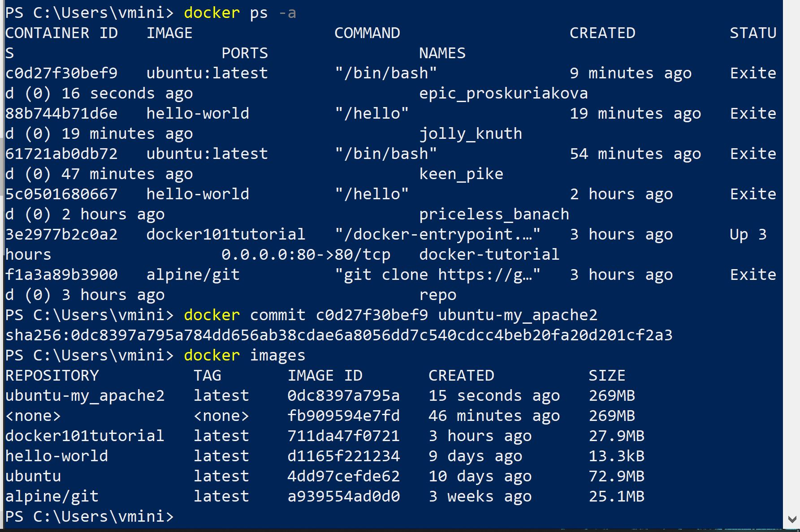
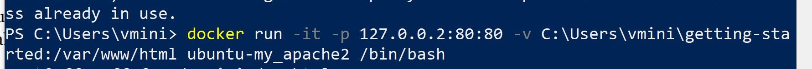

A tutorial on how to setup a web server on your local computer using docker
Creates the image from the Ubuntu base image
docker run -it ubuntu:latest /bin/bashstarts and run a new docker container with image "ubuntu:latest"
***Now that you are in the image, lets install and update the following packages: apt-get updateupdates all the packages on the Ubuntu system
apt-get install apache2installs apache2 onto the image
apt-get install viminstall vim onto the image
apt-get cleancleans up any unnecessary files from the system
***Now that our image is ready, lets exit the container using "exit" command and commit your containerdisplays all containers
docker commit <containerID> <nameOfNewDockerImage>Commits your docker image created into a new docker image
it will login to an interactive shell, -p will expose the port, and -v will bind the host directory.
